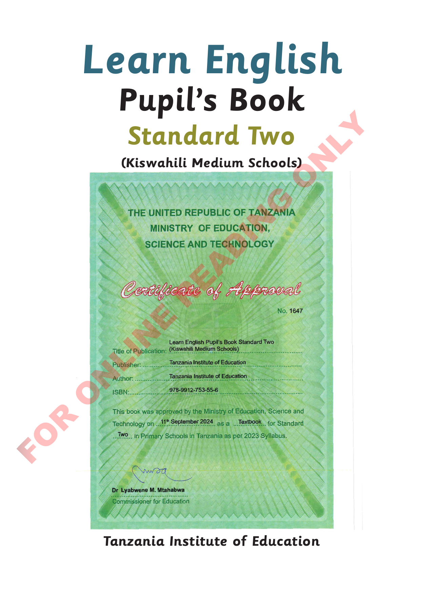

Title page

Learn English Pupil’s Book Y Standard Two L N (Kiswahili Medium Schools) O G N I D A E R E N I L N O R O F
Tanzania Institute of Education

Learn English Pupil’s Book Y Standard Two L N (Kiswahili Medium Schools) O G N I D A E R E N I L N O R O F
Tanzania Institute of Education